Vulvar Lesions & Vulvar Cancer
- Vulvar skin is skin. Dr. Sovran's closing line and the organizing idea of the whole lecture. Everything that happens to skin elsewhere happens here — it just looks different, because the area is warm, moist, occluded and rubbed.
- She names two conditions you are actually expected to diagnose and treat: lichen simplex chronicus and lichen sclerosus. Everything else is recognition and referral.
- Separate the three lichens on three questions: Is there scarring? Is it in the vagina or mouth? Is there a cancer risk? The table below is the whole lecture in one grid.
- Lichen sclerosus is common (~1 in 300), carries a ~4% lifetime squamous cell carcinoma risk, occurs in children (15% of cases), and is associated with hypothyroidism — so check a TSH annually. Treat it forever, symptoms or not, because treating it is what lowers the cancer risk.
- Lichen planus is the one that gets into the vagina and the mouth. Speculum exam is mandatory, tell the patient to mention it to their dentist, and dilators or regular intercourse may be needed to keep the vagina patent — two opposing erosions can heal together and close it off.
- Lichen simplex chronicus is the end stage of the itch–scratch–itch cycle. Architecture is normal, there are no scars. Treat the underlying cause and break the cycle.
- When in doubt, biopsy — a 4 mm punch, and multiple biopsies from areas that look different. Vulvar cancer "can look like lots of things," and 50% of women with it are asymptomatic.
- Look and feel. Cancers feel firm and are often tender to palpation — and don't skip the inguinal lymph node chain, which is the drainage basin.
- Don't just do the Pap and declare her fine. Two of her cases are women who came in asymptomatic, for routine screening, and had obvious disease on the vulva if you looked with intent.
Learning Objectives
- Describe different lesions of the vulva.
- List the various differential diagnoses for the various lesions.
- Compare and contrast vulvar conditions with other skin lesions.
- Describe the presentation of vulvar malignancy.
- List benign masses of the vulva with clinical presentations.
Dr. Laura Sovran's 30-minute module. She frames it explicitly: this "may seem a bit advanced for a medical student," and the goal is to be a resource you come back to as a general practitioner — so don't try to memorize all 82 slides. What she says you must take away is at the top of this page. Vulvar hygiene was covered in a separate lecture; the HPV biology behind the HPV-related cancers is in 4.8, and the infectious differential is 4.5 and 4.6.
This lecture is built around roughly forty clinical photographs of the vulva, most of them courtesy of Dr. Sovran's vulvar-dermatology mentor Dr. Lynne Margesson, used with her permission; the remainder are Dr. Sovran's own patients, who consented to educational use with no identifying names. Those photographs are deliberately not reproduced on this page — the consent and the copyright were given for the lecture, not for a public website. What is here instead: every text and diagram slide, the comparison tables, and written descriptions of what each photograph actually shows, drawn from Dr. Sovran's own narration of it. Go to the module itself to look at the pictures — and she is right that you should, because "seeing what it looks like" is the objective the text cannot fully replace.
The Three Lichens
The core of the lecture. Dr. Sovran teaches these as three cases, each opening with a "Your Diagnosis Is?" slide offering the same four choices — which is the point: they look alike until you know what separates them.
The Comparison That Does the Work
Her summary slide reduces the three to a 3×3 grid. Learn this first, then read the detail.
| Lichen sclerosus (LS) | Lichen planus (LP) | Lichen simplex chronicus (LSC) | |
|---|---|---|---|
| Symptom | Itch or burn | Itch or burn | ++++ Itch |
| Scarring | Scars | Scars | No scar |
| Site | Not in vagina | In vagina AND mouth | Not in vagina |
| Cancer risk | Yes — ~4% SCC | Yes — 2–3% SCC | Not intrinsically* |
| Treatment | Topical superpotent steroid | Topical superpotent steroid (+ vaginal) | Treat the cause, then the skin |
*Her caveat, verbatim in substance: LSC does not carry a cancer risk of its own, "but prolonged inflammation in any system can technically increase your risk of cancer."
Architecture. LSC is itch and thickening with normal anatomy — labia minora still present, no adhesions. LS and LP destroy architecture: the clitoral hood agglutinates and buries the clitoris, the labia minora resorb and disappear, and the introitus narrows. So her clinical habit is worth copying — when the labia minora look absent, ask the patient directly: "do you remember ever having larger labia minora?" Some women simply have small ones, and that question separates normal variation from disease.
Lichen Simplex Chronicus
Essentially vulvar eczema — and, as she puts it, the end stage of the itch cycle.
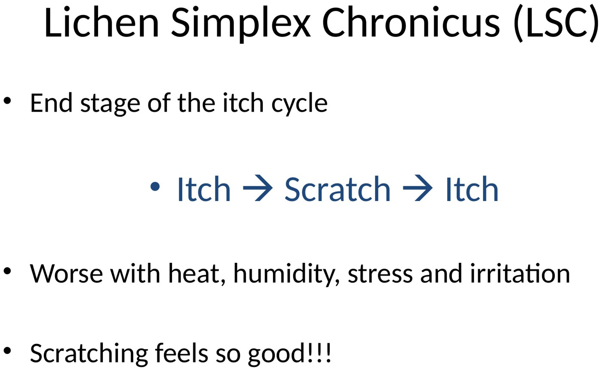
Itch → scratch → itch. Worse with heat, humidity, stress and irritation. The last line is the clinical problem: scratching feels so good, which is why patient education is treatment.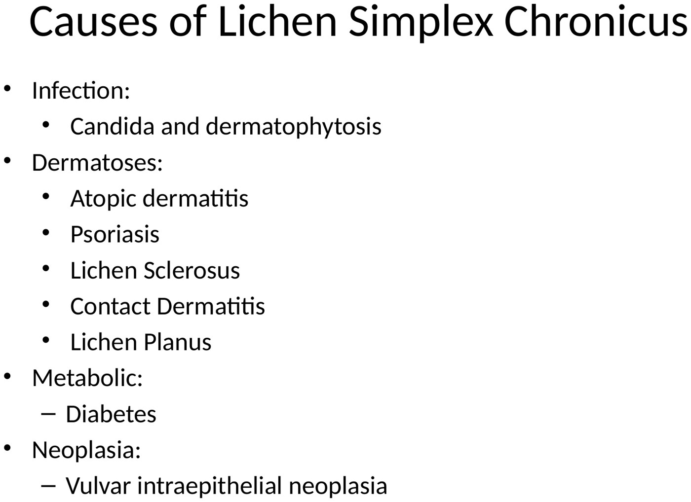
LSC is a reaction pattern, not a diagnosis. Anything that makes her itch causes it — including lichen sclerosus and lichen planus themselves, diabetes, and VIN. So finding LSC means you keep looking.What her case looked like: a 36-year-old with a very itchy rash flaring with heat and friction, not responding to topical steroids, scratching all night, with hay fever and environmental allergies. On the photograph she points to the left interlabial sulcus being noticeably thicker with increased skin markings than the other side — the signature of rubbing. Other clues: a fractured hair pattern from scratching, hyperpigmentation from the thickening, and, decisively, normal architecture with both labia minora present. Her LSC was probably driven by underlying yeast.
Her analogy: the vulva is a sweaty, occluded area, and chronically rubbed skin thickens — like fingertips going white and wrinkly after a long bath. The resulting hyperpigmentation is a consequence of thickening, not of sclerosis. Lichen sclerosus goes the other way: hypopigmented, thin, easily traumatized skin. Thick and dark = LSC. Thin, white and scarred = LS.
![Slide titled Treatment LSC listing confirm diagnosis with biopsy, control infection with fluconazole or cefadroxil and rule out MRSA and candida, stop irritants including heat, sweat and excessive hygiene, educate patient, send for patch testing; then in red stop itch-scratch-itch cycle, cool sitz baths and gel packs, sedate with doxepin or hydroxyzine at night and fluoxetine in the morning, topical superpotent steroids with clobetasol 0.05% ointment twice daily for 2 weeks then once daily for 2 weeks then Monday Wednesday Friday for 2 weeks, and for severe disease a prednisone taper or IM triamcinolone 1 mg per kg up to 80 mg per dose.](../../../../assets/images/week-4/vulvar-lesions/lsc-treatment.jpg)
Lichen Sclerosus
Her case: a 60-year-old attending for a routine Pap, with hypothyroidism but otherwise well and with no complaints of her own. On the vulva: hyperpigmentation anteriorly, labia minora completely resorbed, petechial trauma at the introitus, and hypopigmented plaque. Adhesions of the clitoral hood with the glans buried beneath. A urethral caruncle alongside, consistent with being menopausal. Her line about it: "it's not okay to just do your Pap and be like, you're totally fine."
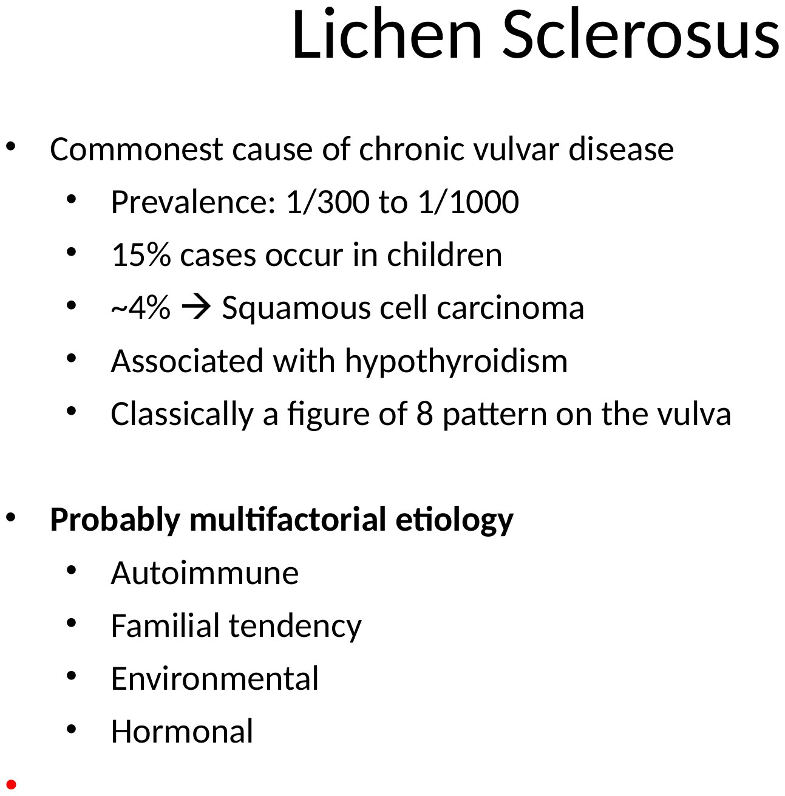
The five numbers worth keeping. She adds that in her clinic it is closer to 1 in 300 than 1 in 1000.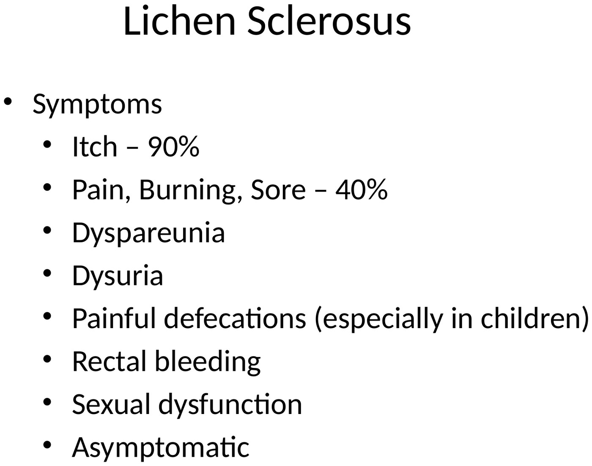
Itch in 90%, pain/burning/soreness in 40% — but note the last bullet: asymptomatic. That is the case above.- The figure-of-8 pattern — the classic distribution, running around the anterior vulva and around the perineal/perianal area, making an 8.
- It occurs in children (15% of cases), so you cannot dismiss it in a child. Harder to spot: the colour change is subtler and the vulvar architecture is not yet fully developed, so "loss of architecture" is a difficult judgement. What she points to in the paediatric photograph is thickened skin around the anus and perineal body from rubbing. In children the presenting symptom is often painful defecation, with fissures as thin skin splits on passing stool, and rectal bleeding.
- Associated with hypothyroidism → annual TSH.
- Why we care: a ~4% lifetime squamous cell carcinoma risk if untreated. That single number is the reason to treat an asymptomatic patient.
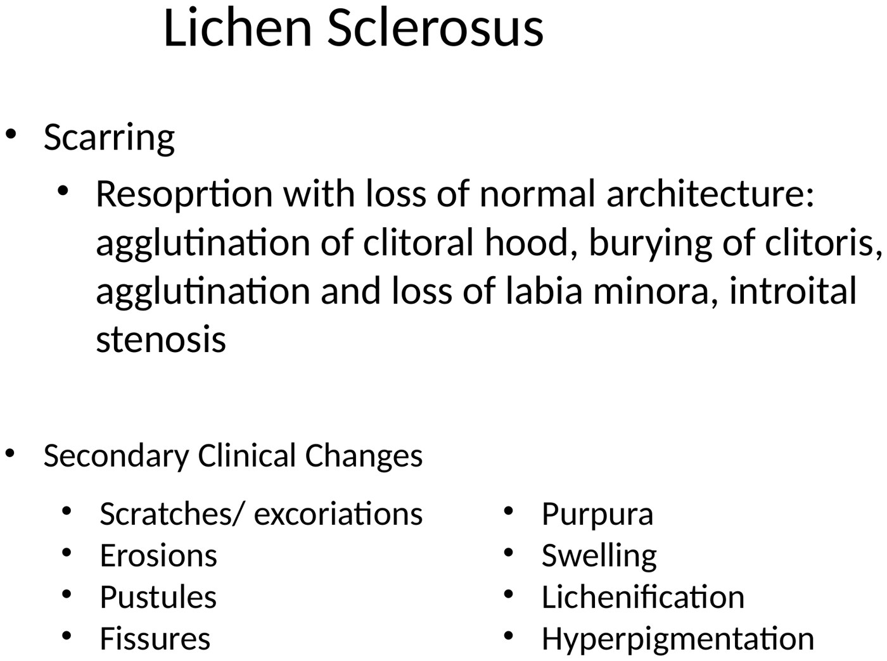
What the photo series shows, in her words: loss of labia minora with a few petechial spots from rubbing · ulcerations where it is unclear whether the cause is scratching or the disease itself · concurrent yeast in one image · varying degrees of hyperpigmentation near the perineal body. In advanced disease: complete loss of architecture, skin so thin it is easily traumatized, with ecchymoses and petechiae. One image also shows a rectocele, which she flags as unrelated to the skin disease — a useful reminder not to attribute every finding to the diagnosis you came for.
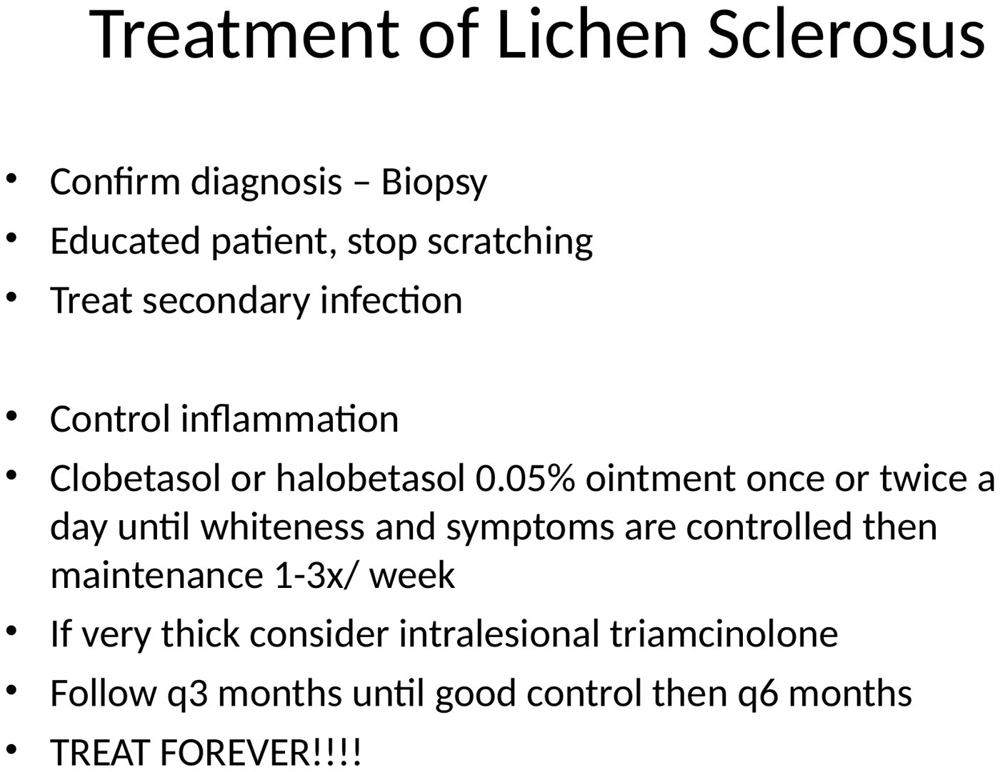
She lists three distinct jobs for the review appointment, which is more than "checking it worked": confirming the skin is actually progressing, confirming she is applying it correctly (a superpotent steroid used wrongly either fails or causes harm), and confirming the disease is controlled — because control, not symptom relief, is what lowers the SCC risk.
Vulvar Melanosis
Placed here deliberately, because it is what you see after the inflammation of lichen sclerosus — and because it mimics the thing you are most afraid of.
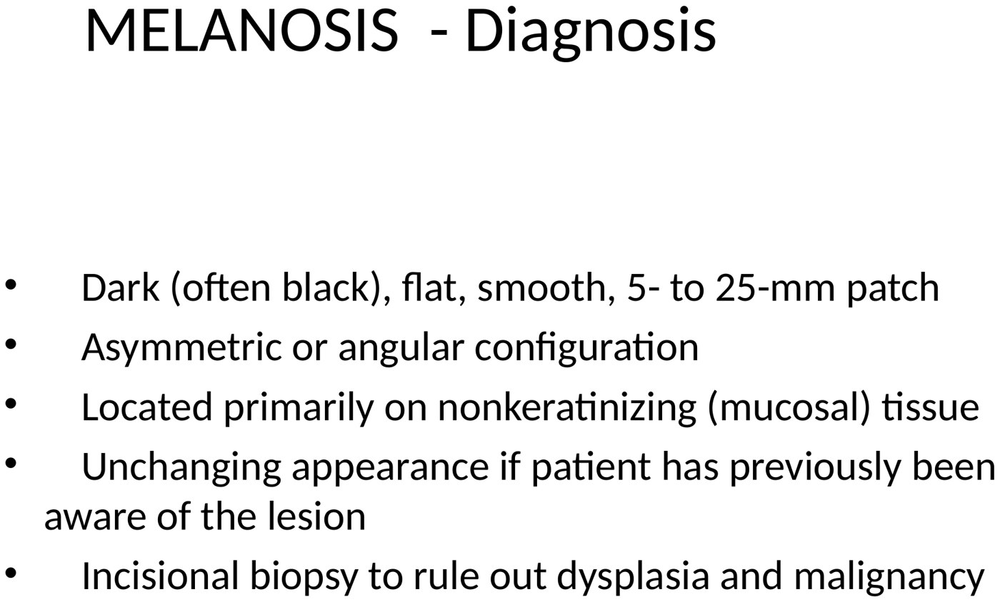
Flat, smooth, 5–25 mm, on non-keratinized mucosa, and crucially unchanging.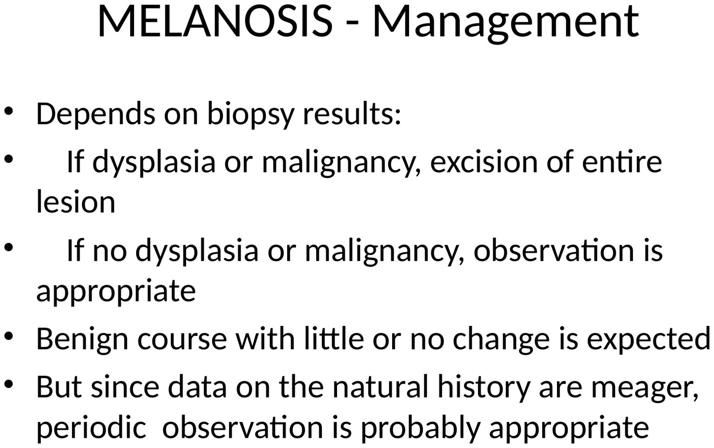
Benign course expected — but the natural-history data are thin, so periodic observation rather than discharge.- It is a post-inflammatory reaction, commonly following lichen sclerosus or another inflammatory vulvar condition.
- The problem is that it can look like melanoma. Her practical answer: track it photographically so change is detectable, and biopsy if concerned. On a multi-spot lesion, biopsy the darkest area — the one most likely to be melanoma if it is.
- Skin tone changes the presentation. She makes this point explicitly: in Caucasian women inflammation tends to add pigment (melanosis), whereas in Black women pigment tends to be removed after inflammation. Both directions can obscure the diagnosis, and both are worth expecting.
- Photography has a second benefit — it lets the patient examine herself meaningfully between visits, because she knows what her own baseline looks like.
Lichen Planus
Her case: a 50-year-old with dyspareunia, otherwise healthy. Her line: you might glance and say the vulva looks normal, but "if you look with the intent of seeing what you need to see" there is a lacy white pattern on the vulva extending up toward the labia minora, and red erosions medially on the vestibule.
A distinction she stops to make, and it is generally useful: ulcerations are deep, extend to the dermis, and have a yellow base. Erosions are superficial and look red, "almost like you've shaved a layer of skin off." That missing layer is exactly why erosive lichen planus hurts and causes dyspareunia.
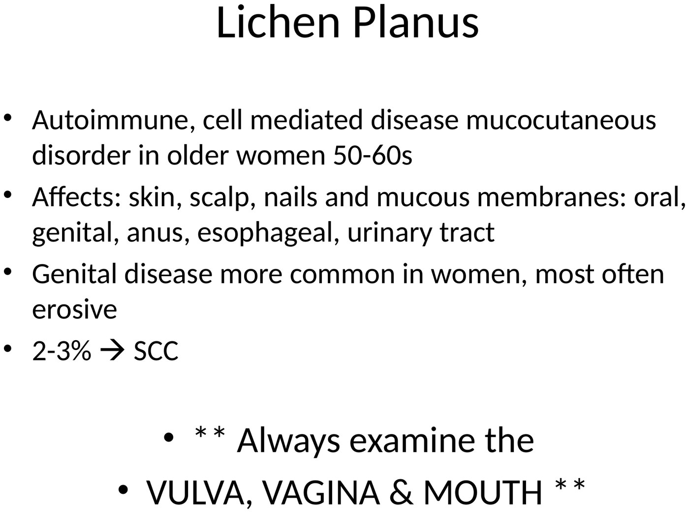
The distinguishing feature is in the last line. Always examine vulva, vagina AND mouth. Note also: on the genitals the erosive pattern is the commonest, not the classic lacy one.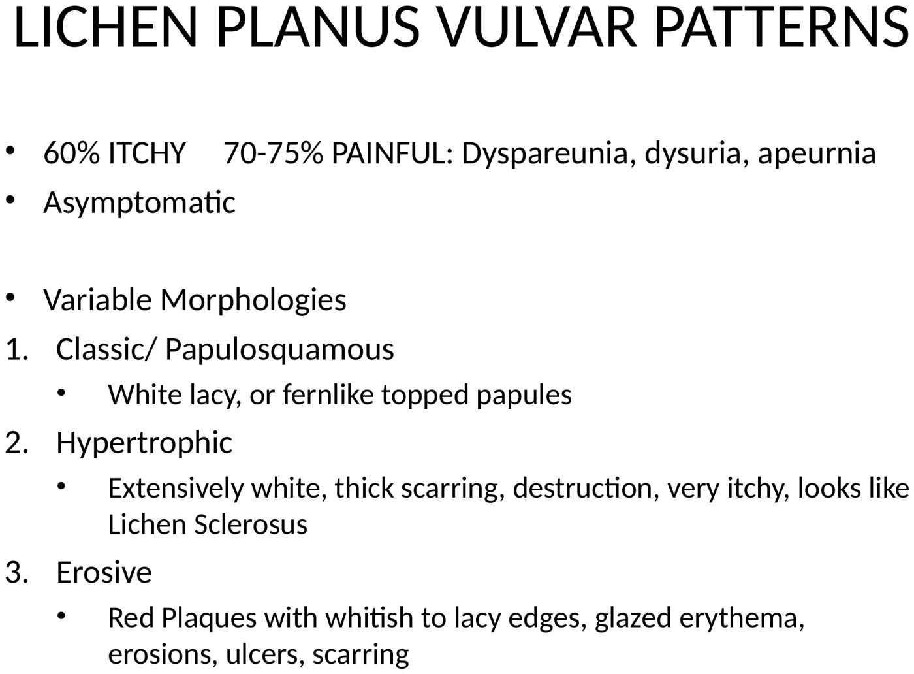
Three morphologies. The hypertrophic one "looks like lichen sclerosus" — which is why biopsy exists, and why it matters less than you'd think (see below).- It gets into the vagina — unlike lichen sclerosus. So a speculum examination with routine monitoring is part of care, not optional.
- It gets into the mouth — she asks patients to tell their dentist the diagnosis.
- 2–3% squamous cell carcinoma risk. Less than lichen sclerosus, but real — her closing line makes a point of it: "lichen sclerosus is associated with cancer, but so is lichen planus."
- The complication to understand mechanically: two erosions facing each other — one on each side of the vagina, or one on each labium minus — can heal together. That agglutination can close off the introitus and, at the extreme, make it impossible to have intercourse or even to void.
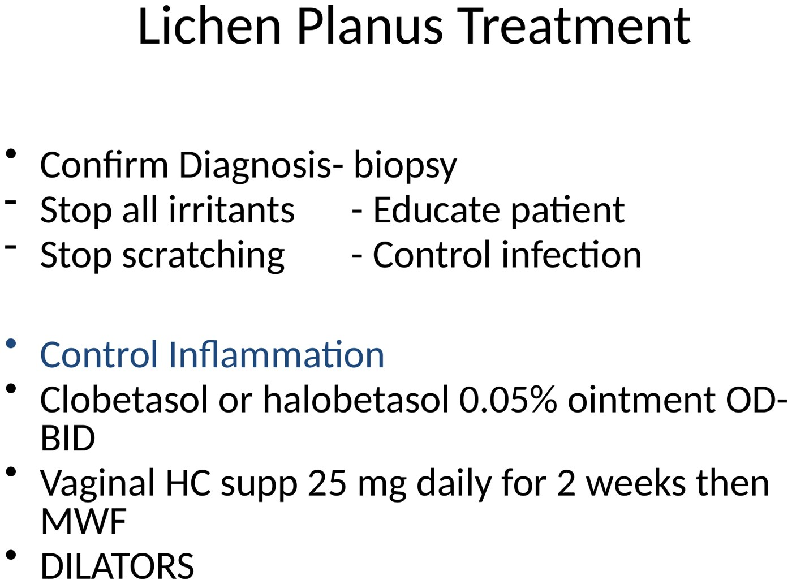
1. If you cannot tell LS from LP, it matters less than you'd fear — "the treatments are the same": clobetasol 0.05% ointment daily until the visible signs resolve (red or white), then maintenance from twice weekly, titrated up or down. Biopsy still confirms it, but you are not paralysed while you wait.
2. A cost workaround. Compounded vaginal hydrocortisone suppositories are expensive; she instead uses over-the-counter Anusol-HC suppositories — made for hemorrhoids — inserted vaginally, for much less money. And the reason dilators or regular intercourse are prescribed is not comfort, it is keeping the vagina patent against the agglutination described above.
The Rest of the Differential
Conditions to recognize, grouped the way she presents them: inflammatory and infectious lesions, then masses.
Aphthous Ulcers
Her case: a 17-year-old with a vulvar lesion for the third time, episodes years apart, each a day or two after strep throat. Initially not painful, then uncomfortable. The lesion is small — ~3 mm, dark, almost black, not raised but slightly depressed. That is the early presentation before it ulcerates.
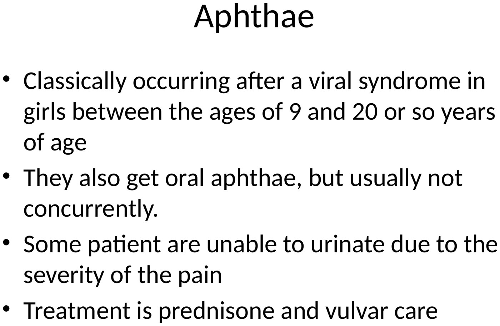
Vitiligo
![Slide on vitiligo: a depigmenting autoimmune disease characterized by loss of melanocytes; 1% of the population worldwide, peak in the second or third decade; associated with other autoimmune disorders like thyroid disease usually chronic autoimmune thyroiditis or Graves disease, pernicious anemia, SLE, Addison disease or primary adrenal insufficiency, type 1 diabetes and hypopituitarism; screen for autoimmune disorders with TSH, anti-thyroperoxidase and anti-thyroglobulin antibodies and fasting blood glucose; generalized vitiligo frequently involves acral areas, skin surrounding body orifices such as eyes, mouth, eyes and nose, and extensor surfaces including interphalangeal, metacarpophalangeal and metatarsophalangeal joints, elbows and knees; the course is usually slowly progressive and 10 to 20 percent of patients may experience spontaneous repigmentation.](../../../../assets/images/week-4/vulvar-lesions/vitiligo.jpg)
Both present as white vulvar skin, and she says outright it can be hard. The answer is again architecture: vitiligo is depigmentation of normal skin — no scarring, no architectural loss. So you look for scarring to tell them apart. Two complications she is honest about: patients can have both, and in extensive vulvar vitiligo the architecture may be hard to read at all. A confirmatory clue in her photograph — the vulvar hair is depigmented too, not just the skin. Distribution helps as well: vitiligo elsewhere favours acral areas, around body orifices, and extensor surfaces.
Seborrheic Keratoses and Molluscum
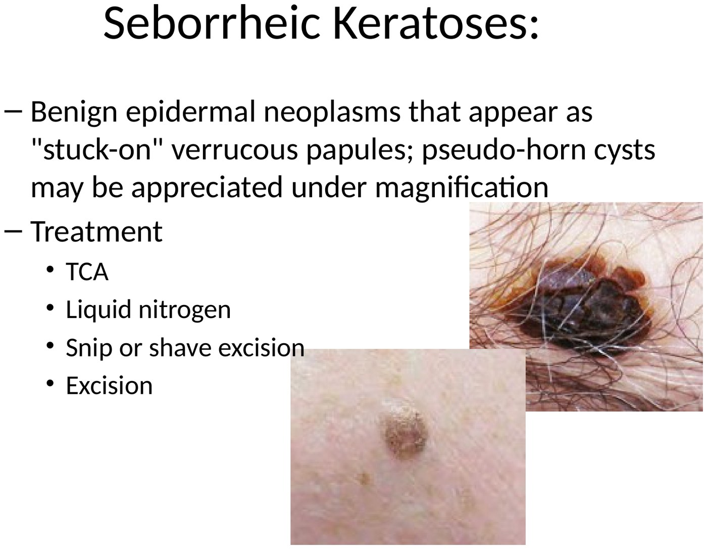
"Stuck-on" verrucous papules — what patients call age spots. Nothing needs doing; treat only if irritated along the underwear line, or biopsy if you are unsure what it is.![Slide titled Molluscum Contagiosum: caused by poxvirus; occurs in healthy adolescents and adults, often as a sexually transmitted disease and in relation to participation in contact sports and with immunodeficiency; spread by direct skin-to-skin contact and avoid shaving as it can spread it; a chronic localized infection consisting of firm, flesh-coloured, dome-shaped papules on the skin of an infected individual usually 2 to 5 mm in diameter; never on palms and soles; treatment - limit spread of lesions to other sites or people, self-limiting and resolve within 2 months with infection clearing within several months, cryotherapy, removal with a curette, unroofing, cantharidin applied by MD washed off after 2 to 6 hours, podophyllotoxin 0.5%.](../../../../assets/images/week-4/vulvar-lesions/molluscum.jpg) Poxvirus. Firm, flesh-coloured, dome-shaped 2–5 mm papules; never on palms or soles. Self-limiting within ~2 months. Sites: vulva, groin, perianal area, inner thighs.
Poxvirus. Firm, flesh-coloured, dome-shaped 2–5 mm papules; never on palms or soles. Self-limiting within ~2 months. Sites: vulva, groin, perianal area, inner thighs.
Two counselling points she adds: molluscum is "sexually transmitted in a sense" — the lubrication of intercourse helps spread it from existing genital lesions — and tell her not to shave, because shaving spreads it. They are soft enough to be scratched off with a fingernail, which is also how they spread.
Yeast Vulvitis
Her headline: yeast vulvitis is often underdiagnosed, and — the thing people get wrong — you do not need vaginitis or clumpy white discharge to have it. It can be a purely vulvar, purely skin problem.
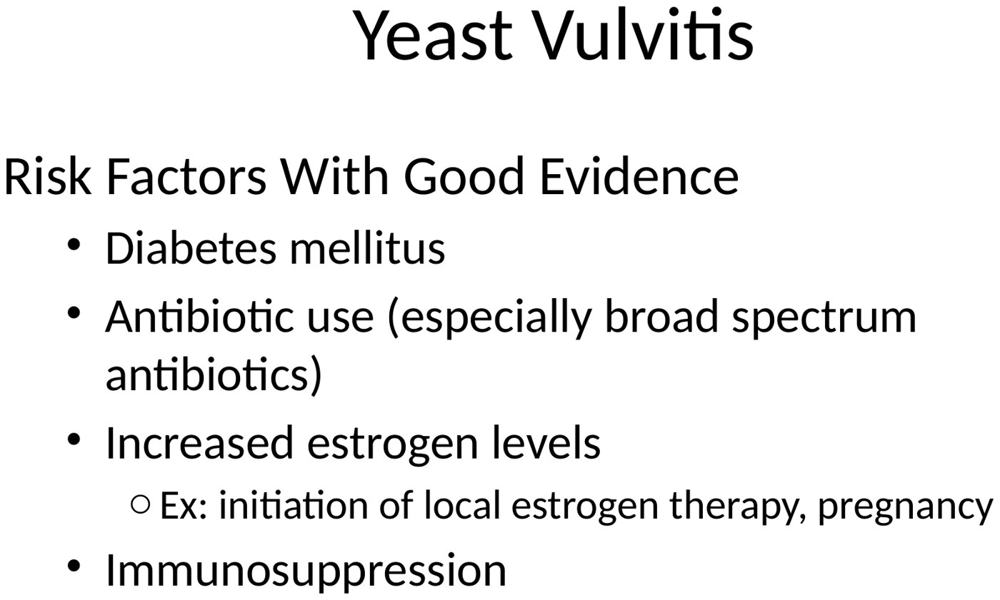
Four risk factors with good evidence. Diabetes leads — and her case below is why.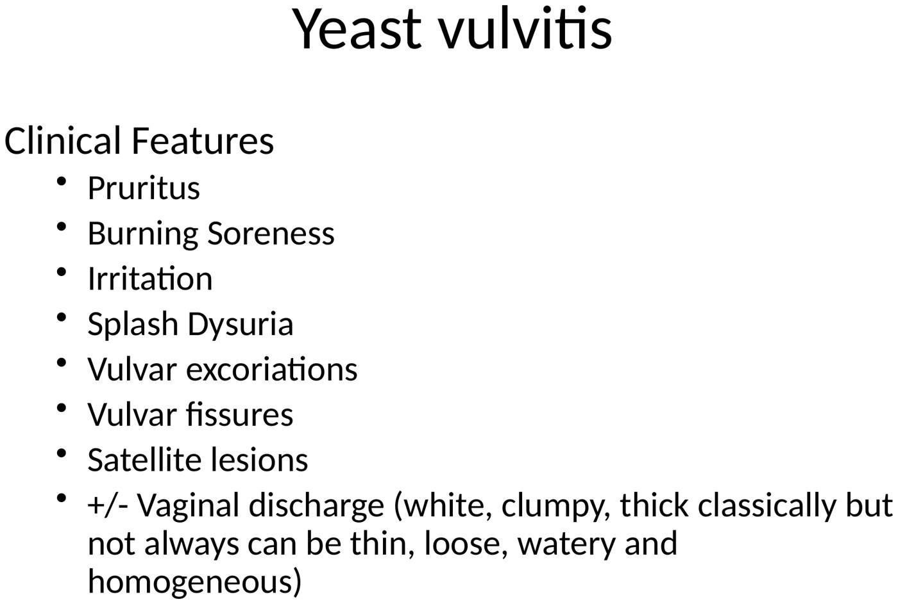
Fissures are one of the top vulvar causes — "like little papercuts." Note splash dysuria and satellite lesions.Splash dysuria is not urethral pain. It does not hurt while the urine is coming out — it hurts when urine touches the broken vulvar skin. That tells you the problem is the skin, not the urinary tract, and it is a discriminator you can get from history alone.
Satellite lesions are small separate red papules just outside the main confluent rash, which will eventually coalesce into it. They are what makes a confluent red rash candidal rather than simply irritant.
The case worth remembering: a ~36-year-old with groin fissures, a red confluent rash with flaking edges, satellite papules, and lichenification from scratching — so she had both LSC and yeast vulvitis. She turned out to be diabetic and did not know it. Yeast vulvitis is a reason to check a glucose.
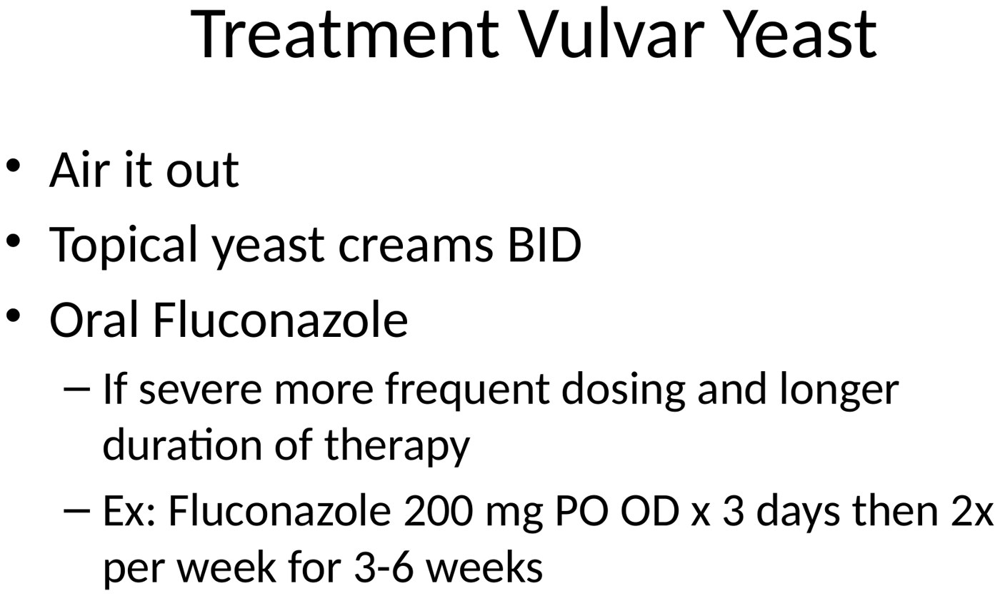
- A cost tip she volunteers: the 150 mg fluconazole is the over-the-counter one and is significantly more expensive — she deliberately prescribes 100–200 mg doses because they are cheaper. On patients taking multiple cardiac drugs she drops to 100 mg twice weekly × 3–6 weeks instead.
- Her compounding trick: hydrocortisone 1% + clotrimazole 1% mixed together — and she notes it makes an excellent diaper-rash cream.
- Think of this diagnosis in anyone who wears a diaper — infants through incontinent adults. She flags it as useful in paediatrics, family medicine, geriatrics and internal medicine, not just gynecology.
- Complicated cases exist — one of her patients has lupus and psoriasis and lives on suppressive fluconazole; another had erosions and lichenified groin skin from a tight, aggressively rubbing diaper strap.
Labial Adhesions
Not a disease of its own — the end result of anything that scars. In her photograph, whether the cause was lichen sclerosus or lichen planus is no longer determinable. Two things follow:
- They may be completely asymptomatic, or cause real problems: if she is voiding through a tiny residual opening, she is at higher risk of voiding dysfunction and urine tracking back into the vagina.
- They can be opened in clinic under local freezing — not an operating-room problem.
Vulvar Masses
Objective 5. Two benign entities, and the one referral confusion she wants you to avoid.
Bartholin Gland Cyst and Abscess
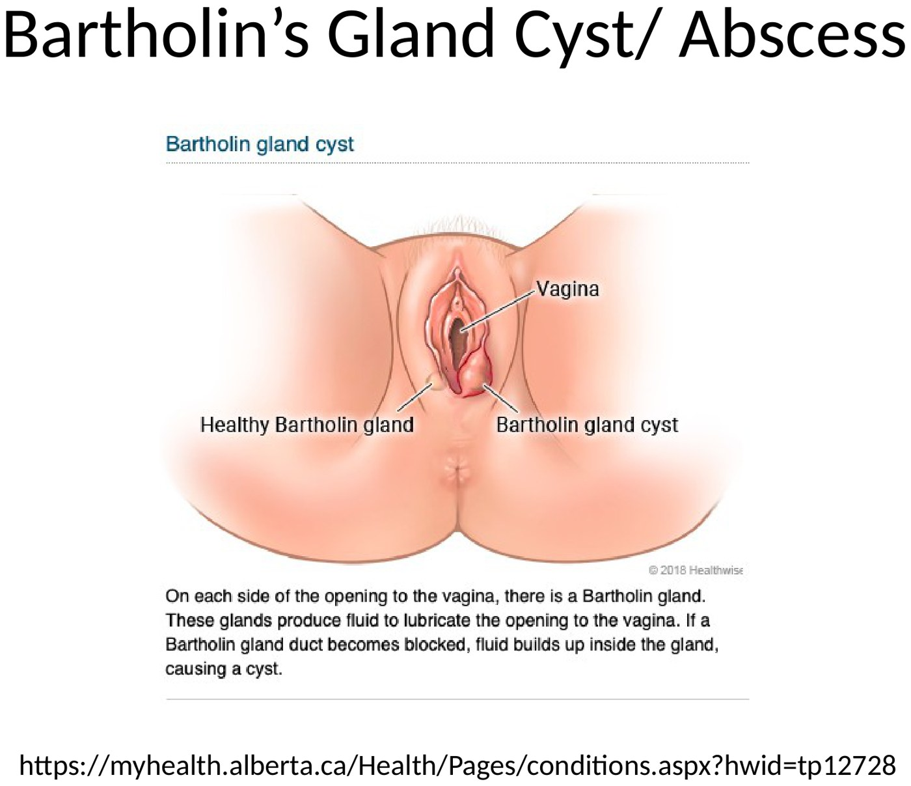
Because of a specific, common error: Bartholin abscesses get referred from the emergency department, and the frequent confusion is with a labial abscess. Location is what distinguishes them — so knowing where the gland sits and where it drains is the diagnostic step, before any imaging or procedure.
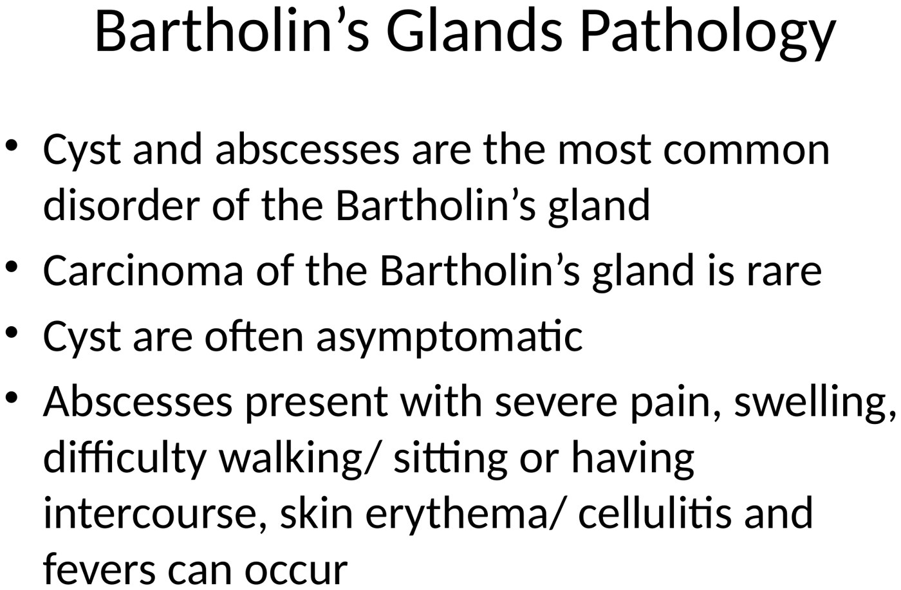
Cyst = often asymptomatic. Abscess = hurts a lot, with difficulty walking, sitting or having intercourse, and she can become systemically unwell. Carcinoma of the gland is rare but exists.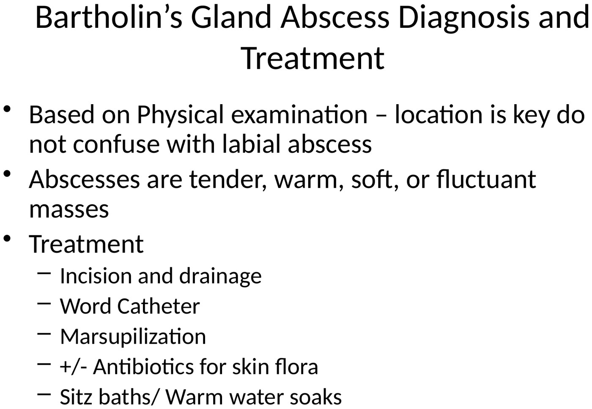
Diagnosis is clinical. Abscesses are tender, warm, soft, fluctuant.| Option | What it is |
|---|---|
| Incision and drainage | The immediate relief |
| Word catheter | A tiny balloon catheter, like a miniature Foley, left in place so the gland re-epithelializes a drainage tract rather than simply re-sealing and recurring |
| Marsupialization | Cutting an opening through the skin and vestibule into the gland and sewing that hole open, creating a permanent drainage tract |
| ± Antibiotics | For skin flora |
| Sitz baths / warm soaks | Caught early, some resolve on this alone — but by the time gynecology sees them, a procedure is usually needed |
Vulvar Lipoma
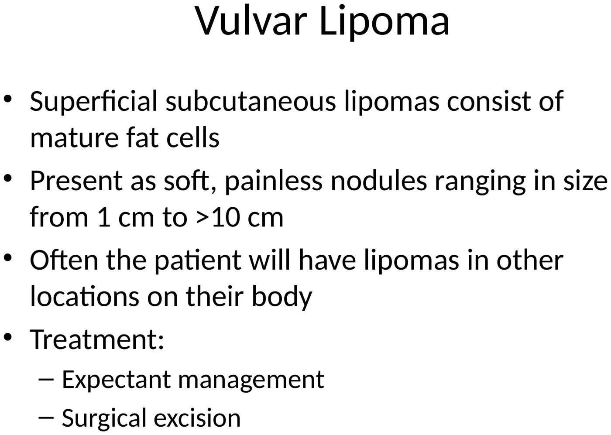
Vulvar Cancer
Objective 4. Her instruction is unusual and worth honouring: don't over-focus on the classification detail — focus on including it in the differential and biopsying properly.
Squamous Cell Carcinoma and VIN
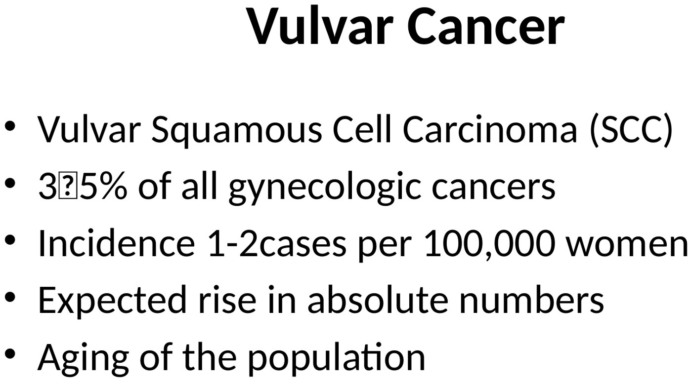
SCC is the commonest vulvar cancer. 3–5% of gynecologic cancers, 1–2 per 100,000 — and absolute numbers are expected to rise as the population ages.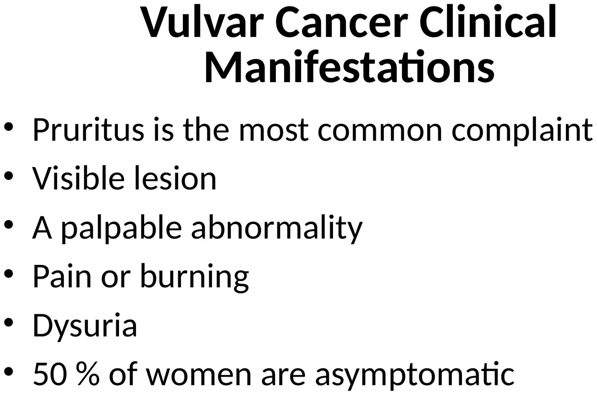
Pruritus is the commonest complaint — and 50% are asymptomatic. Which is the argument for actually looking at the vulva.![Slide titled VIN and Squamous Cell Carcinoma - diagnosis, split into HPV-related: flat-topped red, brown or skin-coloured papules and plaques, younger women, multiple lesions present, located on vestibule, labia majora, perivulvar and perianal sites, biopsy shows in situ carcinoma (VIN) with invasion occasionally present; and non-HPV-related: pink, red or white papule, nodule or ulcer, older women, only a solitary lesion present, located within the vestibule and labia minora and occasionally elsewhere, frequent association with lichen sclerosus or lichen planus, biopsy often shows invasion.](../../../../assets/images/week-4/vulvar-lesions/vin-scc-diagnosis.jpg)
| HPV-related | Non-HPV-related | |
|---|---|---|
| Age | Younger women | Older women |
| Number | Multiple lesions | Solitary lesion |
| Appearance | Flat-topped red, brown or skin-coloured papules and plaques | Pink, red or white papule, nodule or ulcer |
| Site | Vestibule, labia majora, perivulvar, perianal | Vestibule and labia minora |
| Background | HPV infection | Frequently lichen sclerosus or lichen planus |
| Biopsy | In-situ carcinoma (VIN); invasion occasional | Often already invasive |
Two consequences fall straight out of it. The non-HPV pathway is the one that grows out of the lichens you just learned — which is the second reason to treat lichen sclerosus forever, and to biopsy any lichen sclerosus lesion that does not resolve or is refractory to therapy. And the non-HPV lesion is more often already invasive at biopsy, in an older woman, as a single lesion you might be tempted to watch. The HPV pathway, by contrast, is multifocal and recurrent — she notes of one VIN 3 case that being HPV-related gives it "a very high likelihood of recurring."
Examination and Biopsy
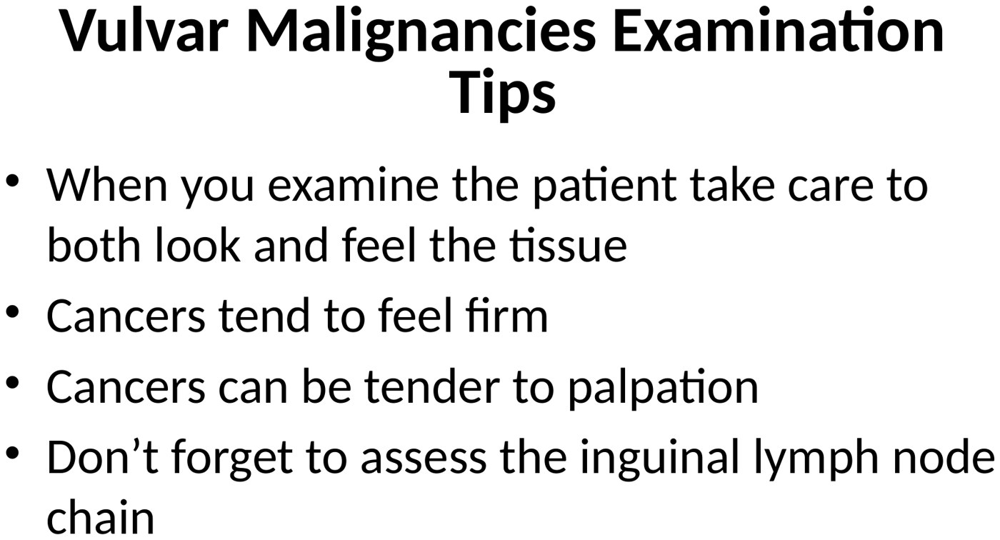
Four lines, all high-yield. Look AND feel. Firm. Often tender. Inguinal nodes.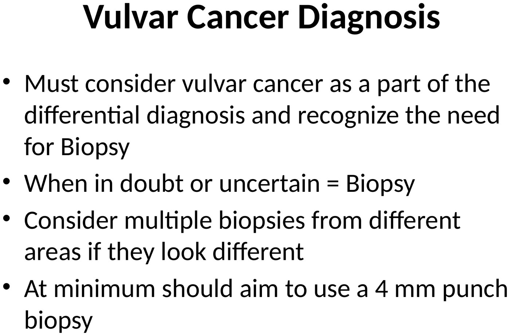
When in doubt = biopsy. Multiple biopsies if areas look different. 4 mm punch minimum.Additional points from her detailed examination slide: direct observation is best, with photographs for comparison; inspect and palpate the vulva and groin for masses, ulceration and colour change; most VIN lesions are multifocal and sit in the non-hairy part of the vulva; lesions are often raised or verrucous and white, but may be red, pink, grey or brown; macular lesions mostly occur on adjacent mucosal surfaces. And the mimics to know: lichen sclerosus, lichen planus, condyloma acuminata and condyloma lata can all mimic VIN. The rule that follows — if one of those is suspected clinically but the lesion does not completely resolve, or is refractory to therapy, biopsy it.
What the malignancy photographs show, in her narration: VIN 3 with HPV — a verrucous growth, with two visibly different areas, so she would biopsy both. VIN 3 with HPV plus perianal SCC — a larger tumour next to a differently raised one; again two biopsies. Vulvar SCC with HPV, perianal — her description is that it "just looks like purple dots," which is precisely her point that it can look like anything. Differentiated VIN 3 on lichen sclerosus — needs biopsy and/or excision to exclude invasion, and she notes the clitoris lies directly beneath it. Lichen sclerosus with SCC — an ulcerative, advanced form, which she uses to make the point that not all of them are growths that stick out; some are ulcers, and you find them by feeling the tissue.
Melanoma and Basal Cell Carcinoma
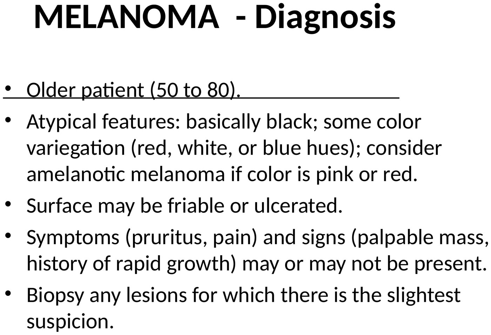
Older patient, 50–80. Basically black with red/white/blue variegation — and if it is pink or red, think amelanotic melanoma. Symptoms may be entirely absent, hence the last line.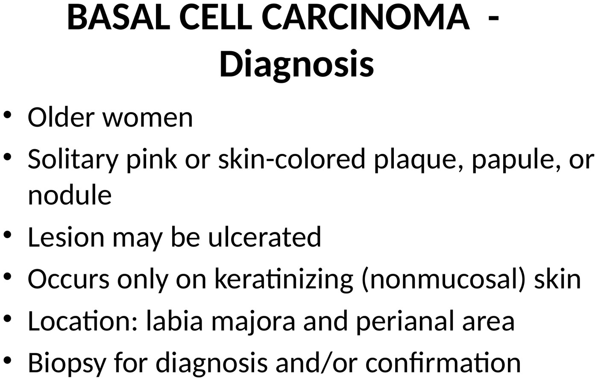
The anatomic rule is the memorable bit: BCC occurs only on keratinizing, non-mucosal skin — so labia majora and perianal area, never the mucosal vestibule.On the melanoma photographs she draws the distinction from melanosis directly: yes, it looks like melanosis — but this one is a raised dark patch, and one area looks distinctly different from the rest, so multiple biopsies are appropriate. Her framing of BCC is the thesis of the lecture restated: "skin is skin — just because it's skin on the vulva doesn't mean it does not occur there."
Extramammary Paget Disease
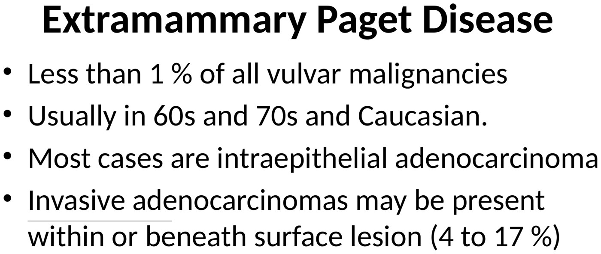
<1% of vulvar malignancies, 60s–70s. Mostly intraepithelial — but 4–17% harbour invasive adenocarcinoma within or beneath the visible lesion.She raises something the slides only hint at: extramammary Paget disease may be primary or secondary, and the secondary form can be associated with another underlying malignancy — of the breast, or the genital or urinary tract. So the diagnosis obliges you to look further rather than treat it as an isolated skin lesion. It can also extend into the rectum, vagina or urinary tract directly.
Where She Sends You
Built from Dr. Laura Sovran's "Vulvar lesions and vulvar cancer" module (30 min): the recorded lecture and its 82-slide deck. The clinical photographs are intentionally not reproduced — see the note near the top of this page; their findings are written out instead, from Dr. Sovran's own narration. Embedded figures are the deck's text and diagram slides only; the Bartholin anatomy diagram on her slide is credited to MyHealth Alberta, and the "Three Lichens" table has been rebuilt as HTML from her summary slide. The auto-transcript is severely corrupted and every drug name and diagnosis on this page was settled against the slides, not the captions — it renders the lecturer as "Dr. Laura Sovereign," Dr. Margesson as "Dr. Lynn Murchison," clobetasol as "dissolve" and "cannabidiol," cefadroxil as "Separate Wraxall," IM triamcinolone as "Im try and sit alone," Anusol-HC as "annual HCQ," clotrimazole as "tramadol," nystatin/miconazole as "nesting or muzzle," melanosis as "melanopsis," ecchymoses and petechiae as "Echinopsis and Poetica," rectocele as "rectal seal," urethral caruncle as "urethral carbuncle," introital stenosis as "toroidal stenosis," lichenification as "like unification" and "quantification," seborrheic keratosis as "separate keratosis," molluscum as "Molluskan" and "molest them," curette as "caret," Bartholin as "Berlin's" and "birth and gland," the Word catheter as an "award catheter," lipomas as "low pumas," VIN 3 as "vim three" and "vein three," splash dysuria as "splashed Asturias," extramammary Paget as "Extra memory Paget's," perianal as "peritoneal," vulvar cancer as "alder cancer," "liver cancer" and "sulfur cancer," and lichen sclerosus as, variously, "Lincoln's girl," "leg sclerosis" and "latent planus." Note also that the deck itself is inconsistent between lichen sclerosis and lichen sclerosus on different slides; lichen sclerosus is used throughout here. Related pages: 4.8 for HPV types and the vaccines behind the HPV-related pathway, 4.5 for the candida and discharge overlap, 4.6 for condylomata, and 4.10 for the vulvar inspection that starts the AUB exam.